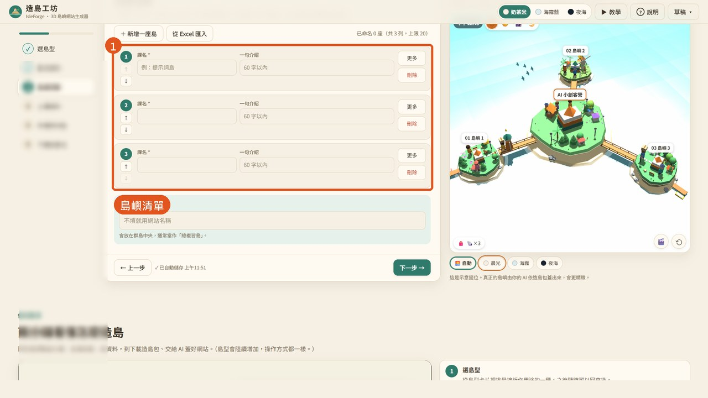
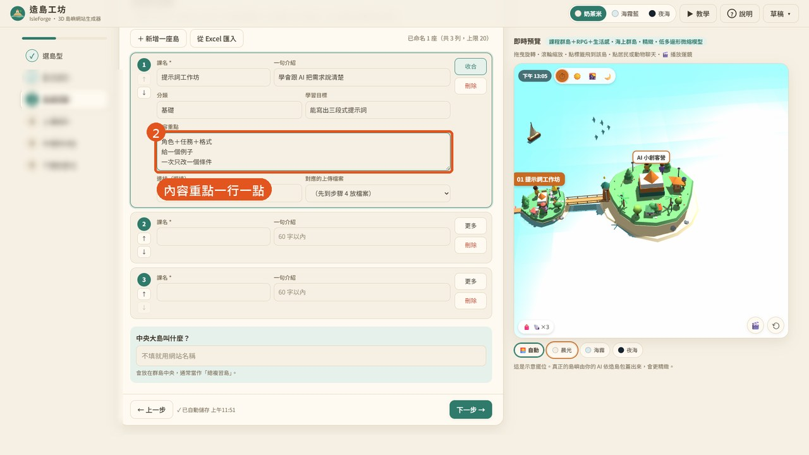
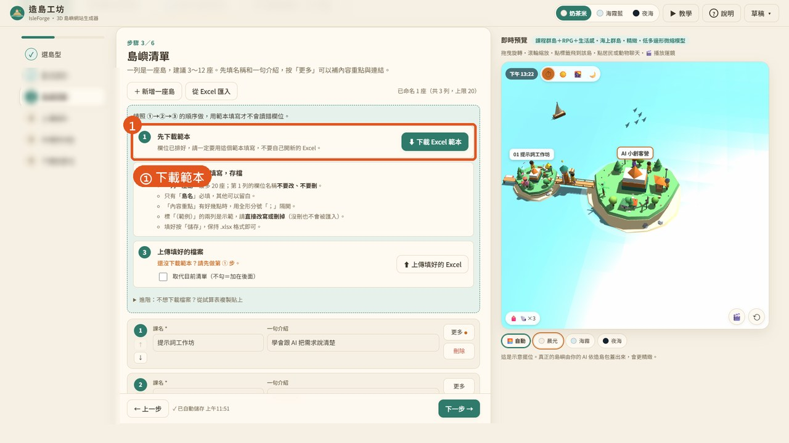
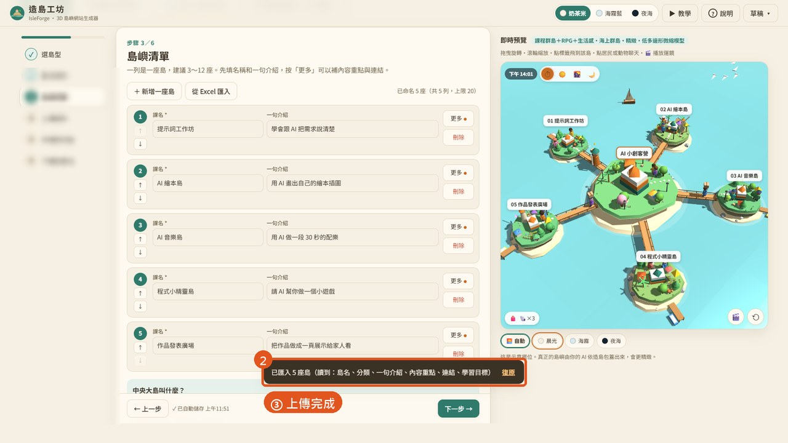
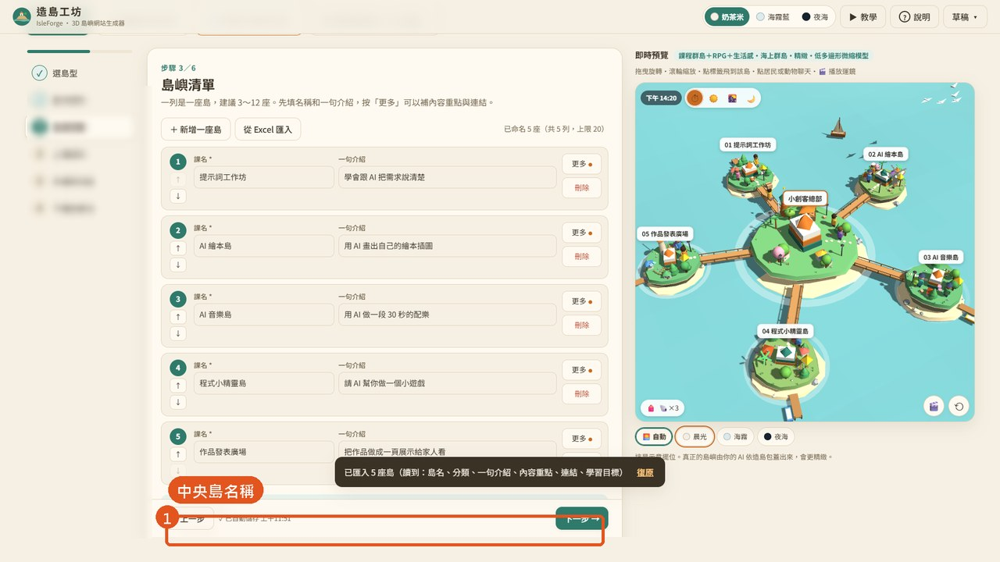
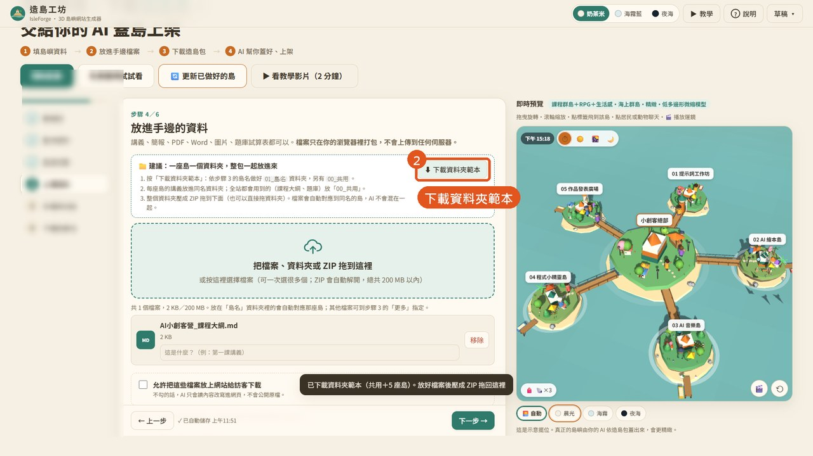
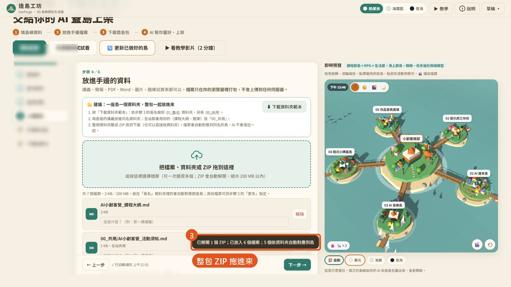
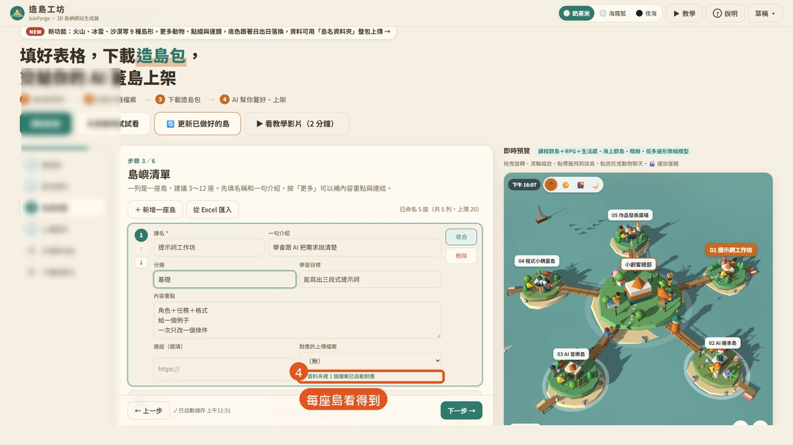
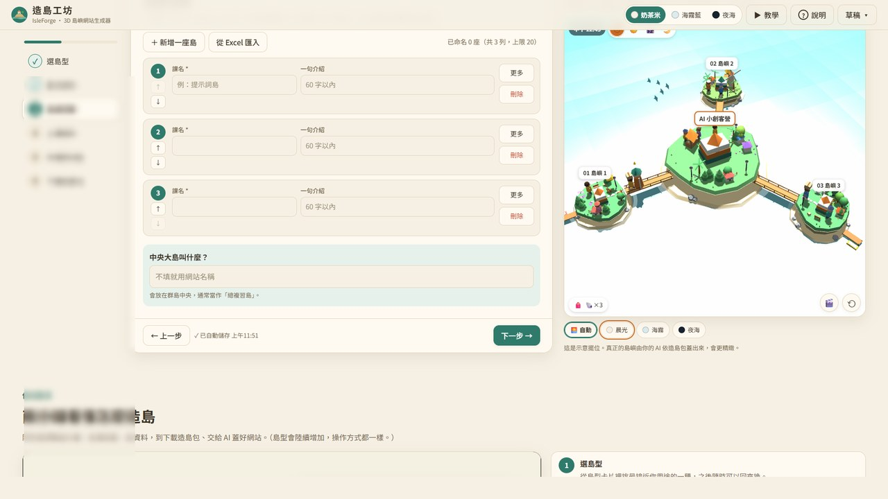

AA 一列一座島
步驟 3：島名必填；按「更多」補內容重點。
1
島嶼清單
一列一座島，左邊箭頭調順序。

2
內容重點一行一點
按「更多」打開分類、學習目標、內容重點、連結。

BB 用 Excel 匯入
島多的時候用範本三步驟。
1
① 下載範本
一定要用範本，第 1 列欄位名稱不要改。

2
③ 上傳完成
勾「取代目前清單」再上傳，看到「已匯入 5 座島」。

CC 中央島與講義
步驟 3 下方填中央島；步驟 4 用「島名資料夾」放講義。
1
中央島名稱
不填就用網站名稱。

2
下載資料夾範本
依島名做好 00_共用、01_島名…資料夾，把講義放進同名資料夾。

3
整包 ZIP 拖進來
自動解開、自動對應到島；也可以直接拖資料夾。

4
每座島看得到
步驟 3 按「更多」顯示自動對應的檔案數。

FF 下次怎麼再打開
同一台電腦直接打開 isleforge-tw.netlify.app，內容會自動回來；換電腦用「草稿 → 匯入草稿或 project.json」。
1
F 下次怎麼再打開
打開網址就會回到上次的內容。

GG 怎麼再修改
點左邊步驟列直接跳過去，改完到步驟 6 重新下載造島包；已上線的網站請用 U07「第二次更新」。
1
點步驟直接跳
想改哪裡就點哪一步。